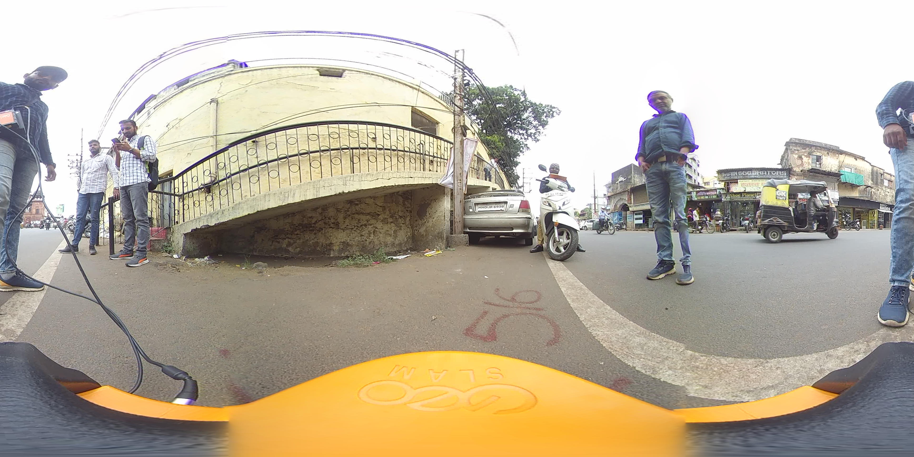
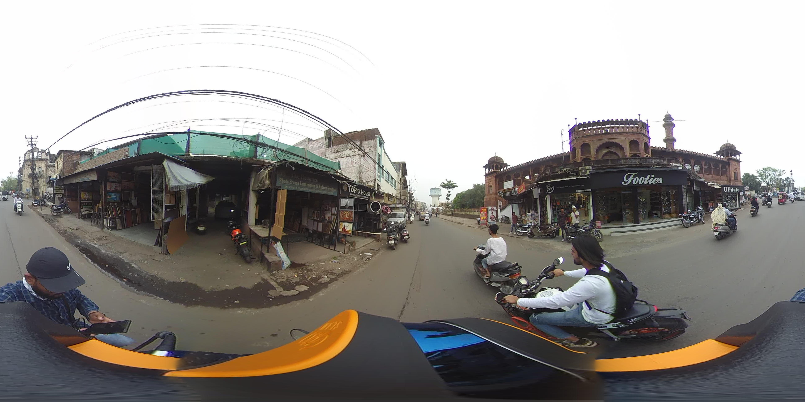
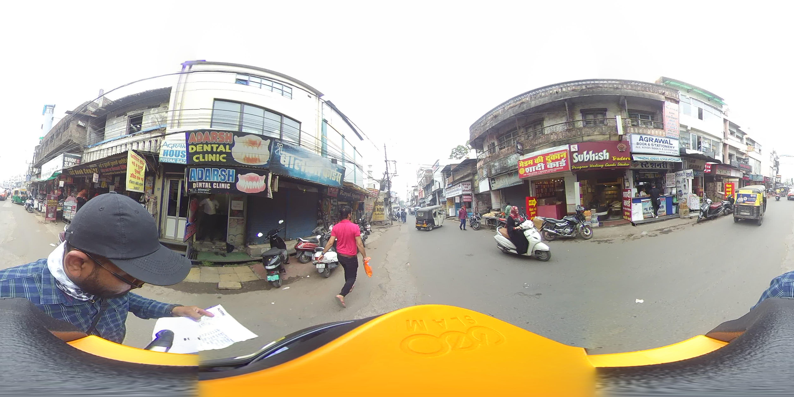
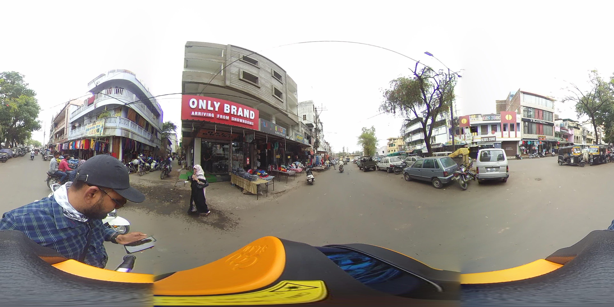
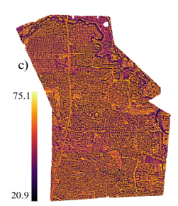
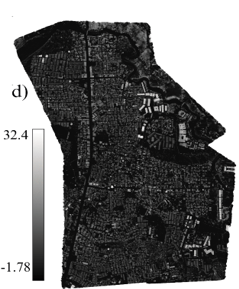
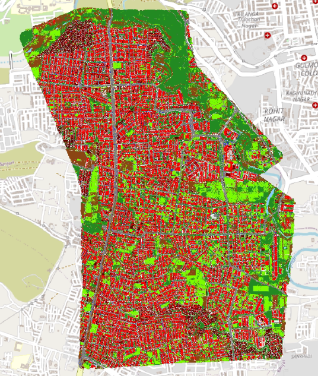
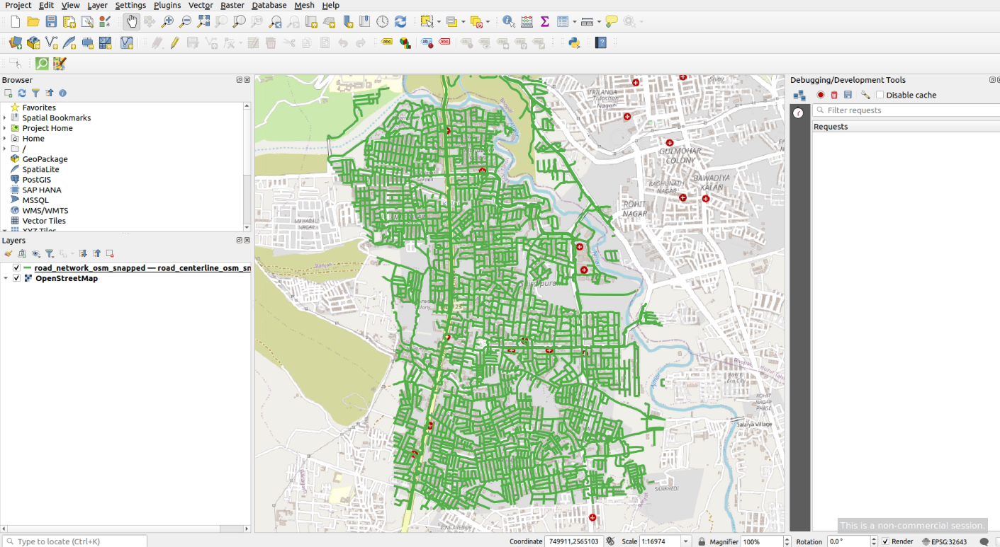
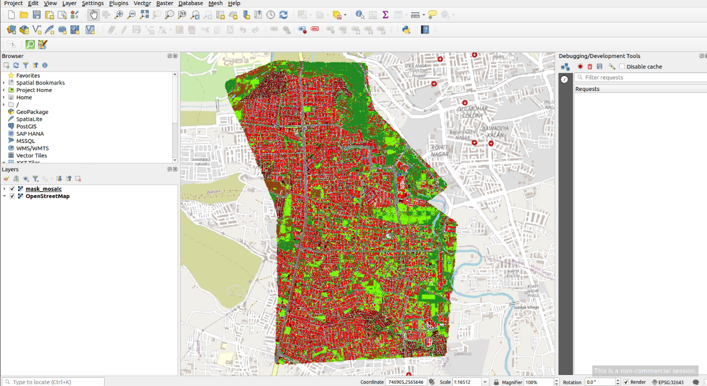

I work on understanding what makes an urban street feel safe, lively, and pleasant, and using that understanding to suggest realistic changes that could improve it.
Samples of each data type I work with — browse them below, and explore the LiDAR point cloud directly in 3D.
Street-view panoramic (360°) images of Azad Market, Bhopal.




UAV images of Gehunkheda region, Bhopal.



Some maps on QGIS software, to analyse the data.


LiDAR point cloud of a building — drag to rotate, scroll to zoom, right-click drag to pan.
Feed in what a street or area currently looks like, and get back a picture of how it could be reshaped, planned around the goals that matter for the people who live there.